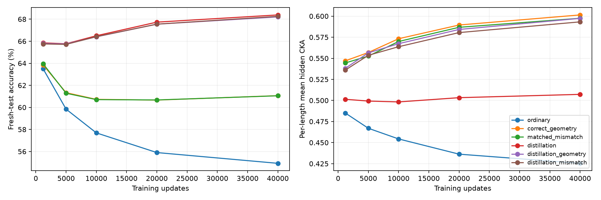

同一冻结descents教师在inverse(x)上提供监督，目标从已有recoils专门模型开始。六份新训练数据各有192训练标签、64验证标签、16384无标签输入；各条件同输入、同初始化、同40000更新。主要终点固定，不根据测试选择。几何位置是任务提示之前的ONE_END。
| 方法 | 整体准确率 | 众数样本 | 非众数样本 | 留出CKA | 答案残差正确−错配 |
|---|---|---|---|---|---|
| 预训练起点 | 68.01% | 77.49% | 63.90% | 0.4992 | 0.0828 |
| 普通微调 | 54.93% | 67.31% | 49.60% | 0.4254 | 0.0583 |
| 正确几何 | 61.06% | 72.06% | 56.32% | 0.6015 | 0.1009 |
| 答案匹配错配 | 61.05% | 71.97% | 56.35% | 0.5975 | 0.0742 |
| 输出蒸馏 | 68.39% | 75.96% | 65.12% | 0.5072 | 0.0713 |
| 蒸馏＋正确几何 | 68.21% | 76.04% | 64.83% | 0.5974 | 0.0933 |
| 蒸馏＋错配 | 68.26% | 76.12% | 64.87% | 0.5932 | 0.0860 |
| 预先固定对比 | 准确率差(pp) | 三模型对bootstrap95 | CKA差 | 非众数差(pp) |
|---|---|---|---|---|
| correct_geometry-matched_mismatch | +0.010 | [-0.3675130208333338, 0.42805989583333065] | +0.00395 | -0.026 |
| correct_geometry-ordinary | +6.136 | [4.141276041666666, 7.629557291666667] | +0.17606 | +6.728 |
| distillation_geometry-distillation | -0.179 | [-0.3717447916666669, -0.004557291666666147] | +0.09017 | -0.293 |
| distillation_geometry-distillation_mismatch | -0.052 | [-0.08365885416666469, -0.014811197916666475] | +0.00416 | -0.041 |
非众数由训练期教师的长度众数映射确定。长度基线在这组样本上按定义为零；重点是条件之间的配对差。六次训练重复依赖三个预训练模型对和同一个原始数据世界，区间是描述性汇总。已知数学关系由实验提供，结果不能证明普通训练自发发现代数关系。
